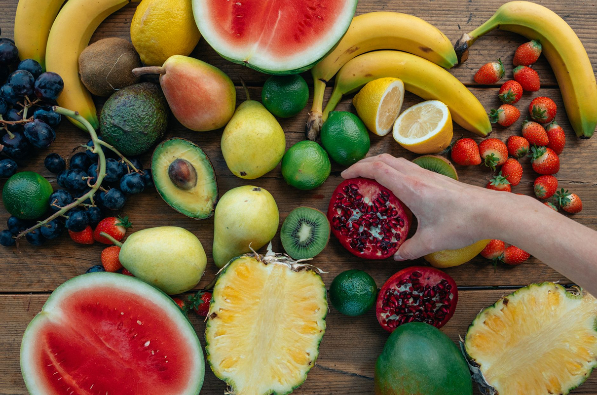
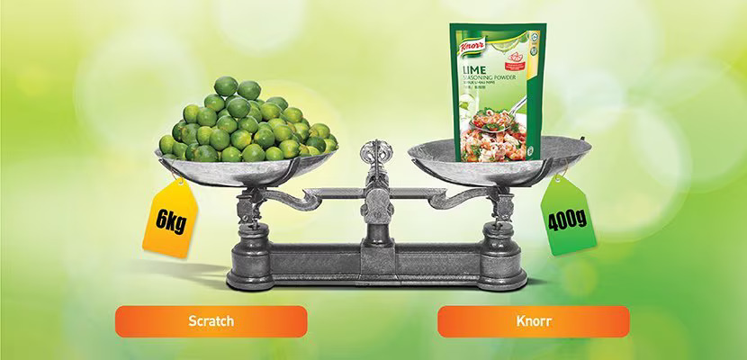

About Us
We are Chefs supporting Chefs.
We're a business built by Chefs, so we know what you face every day in the kitchen. Everything we do is focused on making your life a little easier.
Drawing from their extensive experience in professional food services, our team of over 250 professional Chefs create solutions that balance great taste, convenience and nutrition with a consistently high standard.
250 of us wear whites.
Only a Chef knows what it takes to run a successful kitchen. That's why our business is full of Chefs.
Our global network of 250 Chefs help source the best ingredients, develop quality products, create inspiring on-trend recipes, and provide training and support. Thus ensuring that our sales team is equipped with all the knowledge they need in order to better serve you.

Meet our Chefs
We're here to inspire.
Dining trends and customer expectations are always changing, and it can be an on-going struggle to keep up.
We make it easy to stay inspired and confident with the latest trends, recipes ideas and technique innovations. Check out local trend setters and get insights from chefs around the world to keep you ahead of the pack.

We're all about quality.
Our professional foodservice products are developed with the close involvement of our Chefs. So, it's no surprise that our leading foodservice brands deliver quality without compromise in the kitchen.
With our innovative, professional ingredients you can save precious prep time whilst serving delicious food that makes a profit.



We'll help sharpen those skills.
As a Chef, you know that you never stop learning.
If you're just starting out or are a seasoned pro, you can take your skills in the kitchen to the next level. Our team of industry professionals are waiting to show you hints, tips and tricks you can use right now.

We're a force for good.
As a Chef, you can make a difference by the way you do things in the kitchen.
We understand the benefits a well organized, safe kitchen can have to your business, your customers and to your community. Our tools and resources are designed to help you make those little changes that can make a big difference.

Unilever Food Solutions' commitment to sustainable packaging
When it comes to plastic use, we at Unilever Food Solutions believe less is more. The Unilever Sustainable Living Plan continues to be our guiding light as we work towards the big commitment we have made to reduce plastic.
By 2020: we will reduce the waste associated with the disposal of our products by 50%.
By 2025: 100% of our plastic packaging will be reusable, recyclable or compostable. And 25% of our plastic packaging will be made from post-consumer recycled (or PCR) plastics. We will halve our use of virgin plastic by reducing our absolute use of plastic packaging by more than 100,000 tonnes and accelerating our use of recycled plastic. As well as reducing our use of plastic, we are committed to helping create a circular economy for plastics. This means taking action at all points in the plastic cycle.
Since 2017, we have been transforming our approach to plastic packaging with this three-part framework:
No plastic
Less plastic
Better plastic

Please recycle
All Unilever Food Solutions products will from now on carry the "please recycle" logo, inviting our customers and consumers to come on this journey with us. We are also continuing to work closely with our suppliers and partners to help create recycling solutions where these do not already exist.
